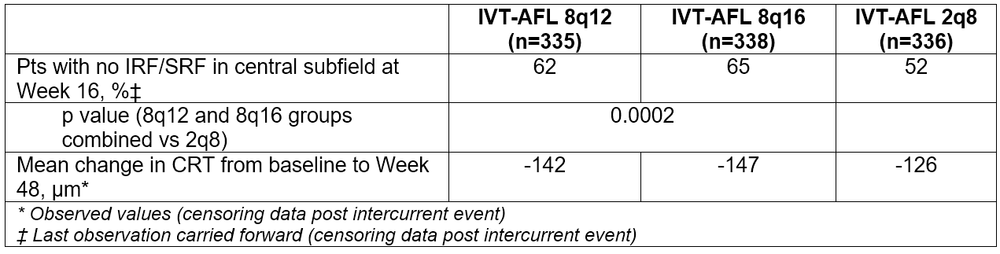

PULSAR
Zusammenfassung1
- PULSAR ist eine laufende, randomisierte, doppelblinde Studie der Phase III zur Bewertung der Wirksamkeit und des Sicherheitsprofils einer Formulierung mit IVT-AFL 8 mg im Vergleich zu IVT-AFL 2 mg zur Behandlung der neovaskulären altersbedingten Makuladegeneration (nAMD).
- PULSAR ist als 96-wöchige Studie geplant und läuft noch.
- 83 % der mit 8 mg IVT-AFL behandelten Patientinnen und Patienten hielten ein verlängertes Dosierungsintervall von ≥12 Wochen ein.
- Die mittlere Veränderung der BCVA vom Ausgangswert bis Woche 48 betrug 6,7, 6,2 bzw. 7,6 ETDRS-Buchstaben in den Gruppen 8q12, 8q16 und 2q8.
- Das Sicherheitsprofil von IVT-AFL 8 mg war dem von IVT-AFL 2 mg ähnlich; es traten keine neuen Sicherheitsbedenken auf.
Ergebnisse in Woche 48
Design1
- Treatment-naïve patients ≥50 years of age with active subfoveal CNV secondary to nAMD, ETDRS BCVA letter scores of 78 to 24 (Snellen equivalent 20/32 to 20/320), decreased BCVA due to nAMD, and IRF and/or SRF present on optical coherence tomography that affected the central subfield were enrolled.
- Patients were randomized 1:1:1 to receive IVT-AFL 8q12, 8q16, or 2q8 after 3 initial monthly injections. Dosing regimen modifications were permitted starting at Week 16, based on prespecified criteria.
Treatment Groups and Dosing Regimens Through Week 48

Results1
Baseline Demographics (FAS)
- Patients received IVT-AFL 8q12 (n=335), IVT-AFL 8q16 (n=338), or IVT-AFL 2q8 (n=336) after 3 initial monthly injections.
- Completion rates for the 3 treatment groups at Week 48 were 94.6%, 92.9%, and 92.3%, respectively.
- The mean number of injections through Week 48 were 6.1 for 8q12, 5.2 for 8q16, and 6.9 for 2q8.
- 83% of IVT-AFL 8 mg patients maintained dosing intervals of ≥12 weeks.
- At Week 48, the 8q12 and 8q16 groups had non-inferior BCVA change compared to 2q8.
Primary Endpoint Results at 48 Weeks (FAS)
Key Secondary Endpoint Results (FAS)

Safety1
The safety profile of IVT-AFL 8 mg was found to be similar to that of IVT-AFL 2 mg; no new safety concerns emerged.
Most Frequent Treatment-Emergent Ocular AEs through Week 48 (SAF)
Reference
-
Korobelnik JF. Intravitreal aflibercept 8 mg injection in patients with neovascular age-related macular degeneration: 48-week results from the Phase 3 PULSAR Trial. Presented at: 55th Annual Scientific Meeting of The Retina Society; November 2-5 2022; Pasadena, CA.
Link